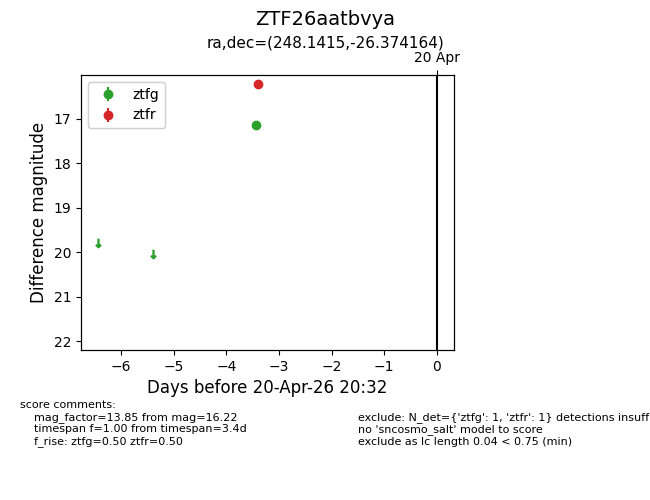
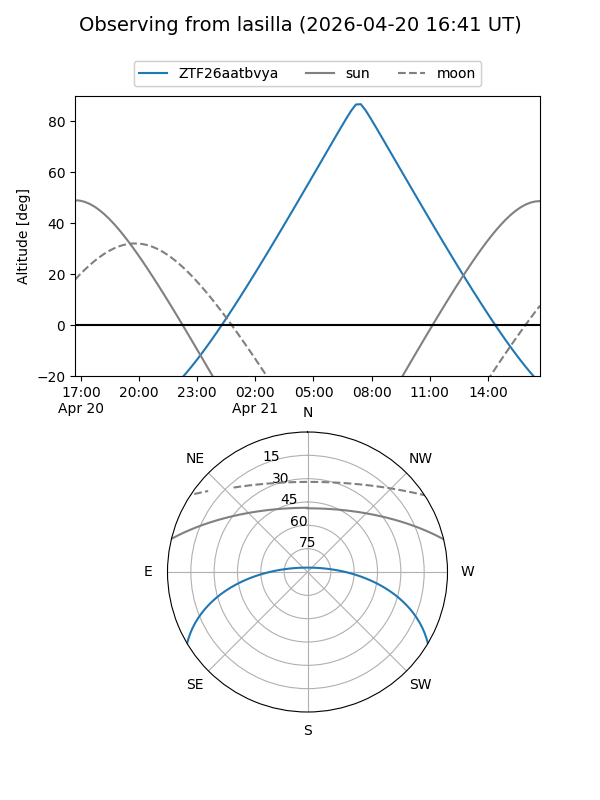
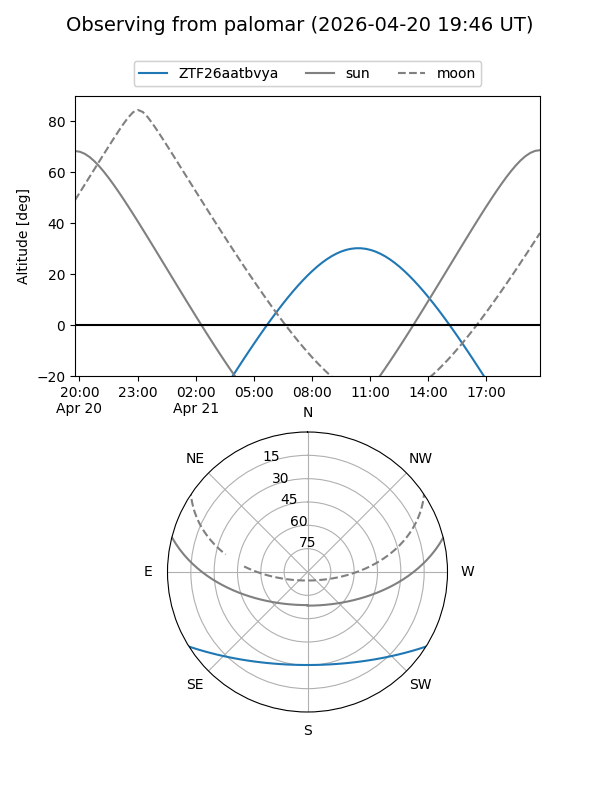

ZTF26aatbvya
Target ZTF26aatbvya at 2026-04-20 20:42
Aliases and brokers:
FINK: link
Lasair: link
ALeRCE: link
alt names
ZTF26aatbvya (ztf,fink_ztf)
Coordinates:
equatorial (ra, dec) = 248.1415,-26.37416
equatorial (HMS+DMS) = 16:32:33.96,-26:22:26.99
galactic (l, b) = (352.4735,+14.56980)
Flags:
Photometry:
last ztfg=17.15, ztfr=16.22
1 ztfg, 1 ztfr detections
Lightcurve

Visibility


Additional plots